局域网
[toc]
基本概念与体系结构
局域网（Local Area Network，LAN）是在相对较小的地理区域（比如一所学校）内，利用双绞线、同轴电缆等连接介质，将各类计算机、外部设备以及数据库系统等相互连接，构建起一个实现资源与信息共享的计算机互联网络。其具有以下主要特点：
- 所有权与规模限制：局域网归一个单位所有，地理范围和包含的站点数目都有一定限度。这意味着它的覆盖范围相对集中，管理和维护相对集中在该单位内部。
- 高带宽共享：所有站点能够共享较高的总带宽，即具备较高的数据传输速率。这使得局域网内的数据传输速度较快，能够满足多个站点同时进行数据传输的需求。
- 低时延与低误码率：具有较低的时延和误码率。数据在局域网内传输时，延迟较小，能够快速到达目的地；同时，由于局域网环境相对稳定，数据传输过程中出现错误的概率较低，保证了数据的准确性。
- 站点平等关系：各站点之间是平等的关系，并非主从关系。这意味着每个站点在网络中的地位相同，都有平等的机会访问网络资源和进行数据传输。
- 广播和多播能力：局域网能够进行广播和多播。广播可以将消息发送给网络中的所有站点，多播则可以将消息发送给特定的一组站点，这种特性方便了网络内的信息传播和资源共享。
局域网的特性主要由三个关键要素决定：拓扑结构、传输介质以及介质访问控制方式。其中，介质访问控制方式最为重要，它在很大程度上决定了局域网的技术特性。
常见拓扑结构
- 星形结构：所有站点都连接到一个中心节点，如集线器或交换机。这种结构便于集中管理和维护，某个站点出现故障不会影响其他站点，但中心节点一旦出现问题，整个网络可能瘫痪。
- 环形结构：各个站点通过通信链路连接成一个闭合的环，数据在环中沿着一个方向逐站传输。这种结构的优点是传输延迟固定，但某个站点的故障可能导致整个网络通信中断。
- 总线形结构：所有站点都连接到一条总线上，任何一个站点发送的信号都能被其他站点接收。它的优点是结构简单、成本低，但容易产生冲突，总线出现故障会影响整个网络。
- 复合型结构：是星形和总线形结合的结构，兼具两者的部分特点，能够在一定程度上弥补单一结构的不足。
传输介质
局域网可使用多种传输介质，如铜缆、双绞线和光纤等，其中双绞线是目前的主流传输介质。双绞线价格相对较低，安装方便，适用于大多数局域网环境。
介质访问控制方法
- CSMA/CD协议：主要应用于总线形局域网，通过载波监听和冲突检测来避免和处理冲突，确保数据的有序传输。
- 令牌总线协议：同样常用于总线形局域网，它在总线上建立一个逻辑环，站点只有获取令牌才能发送数据，以此避免冲突。
- 令牌环协议：主要用于环形局域网，令牌在环中传递，持有令牌的站点可以发送数据，保证了环网中数据传输的有序性。
三种特殊的局域网拓扑实现
以太网
- 目前应用最为广泛，其逻辑拓扑为总线形结构，物理拓扑是星形结构。
- 在逻辑上，所有站点共享总线，如同连接在一条总线上；
- 在物理连接上，各个站点通过双绞线连接到中心的交换机或集线器，呈现出星形的布局。
令牌环（Token Ring，IEEE802.5）
- 逻辑拓扑是环形结构，物理拓扑为星形结构。
- 在逻辑上，站点形成一个环，令牌在环中传递；
- 物理上，各站点通过线缆连接到中心设备，类似于星形结构。
FDDI（光纤分布数字接口，IEEE802.8）
- 逻辑拓扑是环形结构，物理拓扑为双环结构。
- 采用光纤作为传输介质，通过两个反向旋转的环来提高网络的可靠性和容错能力，其中一个环作为主环用于数据传输，另一个环作为备用环，当主环出现故障时，备用环可以接替工作。
IEEE 802标准定义的局域网参考模型只对应于OSI参考模型的数据链路层和物理层，并将数据链路层进一步拆分为两个子层：逻辑链路控制（LLC）子层和介质访问控制（MAC）子层。
MAC子层
- 负责与接入传输介质相关的工作，向上层屏蔽了对物理层访问的各种差异。
- 其主要功能包括组帧和拆卸帧，即将来自上层的数据封装成帧以便在物理层传输，并在接收时将帧拆解还原为数据；
- 进行比特传输差错检测，确保数据在传输过程中的准确性；
- 实现透明传输，保证数据在传输过程中不被误解或修改。
LLC子层
- 与传输介质无关，它向网络层提供四种不同的连接服务类型，分别为无确认无连接、面向连接、带确认无连接以及高速传送。
- 这些服务类型为网络层提供了多样化的选择，以满足不同应用场景对数据传输的需求。
由于以太网在局域网市场占据垄断地位，几乎成为局域网的代名词。而802委员会制定的LLC子层作用逐渐减小，如今许多网卡仅安装MAC协议而不再安装LLC协议。
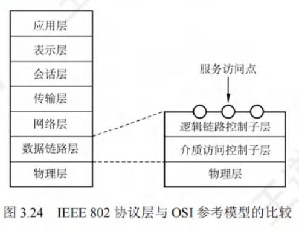
以太网与IEEE802.3
发展历程
以太网规约的首个版本是由DEC、Intel和Xerox联合提出的DIX V1 。随后，该版本被修订为第二版规约DIX Ethernet V2，这一版本成为世界上首个局域网产品的规约。在此基础之上，IEEE802委员会的IEEE 802.3工作组制定出第一个IEEE的以太网标准——IEEE802.3。
技术特点
- 拓扑与访问控制：
- 以太网在逻辑层面采用总线形拓扑结构，这意味着所有计算机共同连接在同一条总线上，信息以广播的形式进行发送。
- 为了实现对总线的有效访问控制，以太网采用CSMA/CD（载波监听多路访问/冲突检测）方式。
- 标准差异与通用称呼：严格来讲，只有符合DIX Ethernet V2标准的局域网才能被称为以太网。然而，DIX Ethernet V2标准与IEEE 802.3标准之间的差异极小，所以在日常使用中，人们通常将802.3局域网简称为以太网。
通信简化措施
- 无连接工作方式：
- 以太网采用无连接的工作模式，在数据发送过程中，既不会对发送的数据帧进行编号，也不要求接收方发送确认信息。
- 这表明以太网仅尽最大努力交付数据，提供的是不可靠服务。如果数据在传输过程中出现差错，对差错的纠正工作将由高层协议来完成。
- 例如，在传输文件时，若某个数据帧丢失或出错，以太网不会主动处理，而是由上层的应用层协议（如TCP）来负责重传等纠错操作。
- 曼彻斯特编码：
- 以太网发送的数据均采用曼彻斯特编码的信号。
- 在曼彻斯特编码中，每个码元的中间都会出现一次电压转换，接收方可以利用这种电压转换轻松地提取位同步信号。
以太网的传输介质与网卡
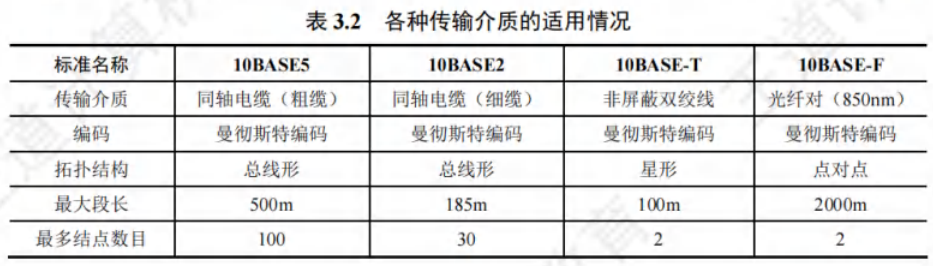
以太网传输介质
- 以太网在实际应用中，常用的传输介质共有4种，分别是粗缆、细缆、双绞线和光纤。这些传输介质在性能、成本、适用场景等方面各有特点，以满足不同环境下的以太网组网需求。
- 在以太网相关标准命名中，“10”代表标准的传输速率为10Mb/s ，“Base”意味着这是基带以太网。早期标准里，“Base”之后紧跟的数字，如“5”或“2”，分别表示单段传输介质的最大传输距离不超过500m或185m 。而“Base”之后的“T”代表双绞线，“F”则代表光纤。例如，10Base-T 表示传输速率为10Mb/s的基带以太网，使用双绞线作为传输介质。这种命名方式简洁明了，方便用户根据标准名称快速了解以太网的基本特性和所使用的传输介质。
网卡（网络适配器）
- 连接作用：
- 计算机要实现与外界局域网的连接，依靠的是主板上嵌入的一块网络适配器（Adapter），也常被称作网络接口卡（Network Interface Card，NIC）。
- 它如同计算机与局域网之间的桥梁，承担着数据传输和交互的关键任务。
- 工作层次与结构：网络适配器工作在数据链路层，其上装有处理器和存储器。这使得它具备一定的数据处理和存储能力，能够在数据链路层对数据进行有效的处理和管理。
- 通信方式转换：
- 适配器与局域网之间通过电缆或双绞线以串行方式进行通信，而与计算机则通过计算机的I/O总线以并行方式通信。
- 由于计算机内部的数据处理和传输多采用并行方式，而局域网传输介质通常以串行方式传输数据，所以适配器的一项重要功能就是进行数据的串并转换，确保数据在不同通信方式之间能够准确、高效地传输。
- 其他功能：
- 适配器除了实现物理连接和电信号匹配外，还具备一系列与数据链路层相关的重要功能。
- 它负责帧的发送与接收，确保数据以帧的形式在局域网中正确传输；
- 进行帧的封装与拆封，将来自上层的协议数据单元封装成适合在局域网传输的帧格式，接收时再将其拆解还原；
- 执行介质访问控制，遵循以太网的CSMA/CD等访问控制协议，协调计算机对传输介质的访问；
- 完成数据的编码与解码，将数字信号转换为适合在传输介质上传输的信号形式，并在接收端还原；
- 同时，还设有数据缓存功能，以应对数据传输速率的差异，避免数据丢失。
- 数据交互流程：
- 当适配器收到正确的帧时，会利用中断机制通知计算机，并将数据交付给协议栈中的网络层进行进一步处理。
- 反之，当计算机要发送IP数据报时，协议栈会把IP数据报向下传递给适配器。适配器将其组帧后，再发送到局域网中，从而实现计算机与局域网之间的数据交互。
以太网的MAC地址
MAC地址的定义与特性
- IEEE802标准为局域网制定了一种48位的全球地址，它被固化在局域网内每台计算机适配器的ROM中，被称作物理地址或MAC地址（因其应用于MAC帧）。
- 这个地址主要用于掌控主机在网络中的数据通信。其具有全球唯一性，即全世界所有的局域网适配器都拥有不同的MAC地址。
- 而且，只要计算机的适配器不更换，无论该计算机在地理位置上如何变动，其MAC地址始终保持不变。
- 这种特性使得MAC地址成为网络设备在物理层面的独特标识，在网络通信中起到关键作用。
MAC地址的格式与组成
- MAC地址长度为6字节，通常以由连字符（或冒号）分隔的12个十六进制数来表示，例如：。
- 高24位是厂商代码，这部分由IEEE统一分配给各个网络设备制造商，用于标识生产厂商。
- 低24位则由厂商自行分配给其生产的适配器，作为序列号，用于在厂商内部唯一标识每个适配器。
- 通过这种方式，保证了全球范围内每个适配器的MAC地址的唯一性。
MAC地址在路由器中的应用
- 当路由器通过适配器连接到局域网时，适配器上的MAC地址就用于标识路由器的特定接口。
- 如果路由器同时连接到两个不同的网络，那么它需要配备两个适配器，每个适配器都有各自独立的MAC地址，以此来区分不同网络接口的通信。
- 这使得路由器能够准确地处理来自不同网络的数据包，并将其转发到正确的目标网络。
适配器对MAC帧的处理依据
- 适配器在从网络接收到MAC帧时，首先会利用硬件检查MAC帧中的目的地址。只有当该帧是“发往本站的帧”时，适配器才会收下，否则将丢弃该帧。这里“发往本站的帧”涵盖以下三种类型：
- 单播帧（一对一）：
- 即接收到的帧的目的地址与本站的MAC地址完全相同。
- 这种情况下，该帧明确是发送给当前站点的，适配器会接收并进一步处理。
- 广播帧（一对全体）：
- 此类帧是发送给本局域网上所有站点的，其目的地址为全1地址。
- 在局域网中，所有站点都会接收并处理广播帧，常用于一些需要通知所有站点的场景，如网络配置信息的广播等。
- 多播帧（一对多）：
- 这是发送给本局域网上特定一部分站点的帧。
- 适配器会检查自身是否属于该多播组，如果是，则接收该帧，否则丢弃。
- 多播在一些需要特定一组设备接收数据的场景中应用广泛，如在线视频会议，只有参与会议的设备才会接收相关的多播数据。
- 单播帧（一对一）：
以太网的MAC帧
以太网的MAC帧格式主要有DIX Ethernet V2标准（即以太网V2标准）和IEEE802.3标准，这里着重介绍常用的以太网V2的MAC帧格式，其结构可结合图3.25来理解。
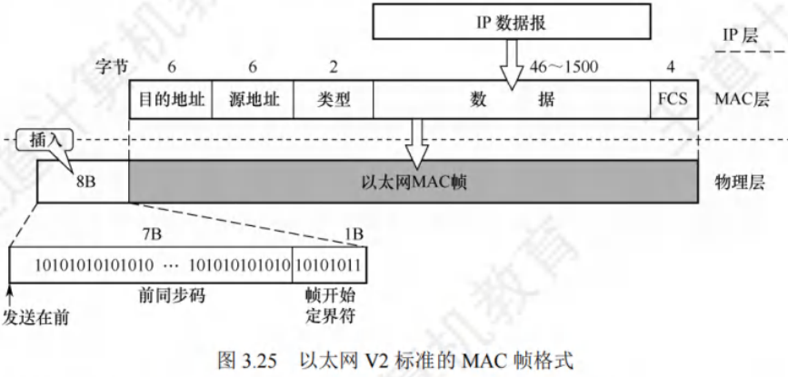
- 前导码：在帧前面插入的8字节前导码，由两个字段构成。
- 前同步码：第一个字段为7字节的前同步码，其功能是实现MAC帧的比特同步。通过特定的比特模式，使接收方能够与发送方的时钟频率同步，确保正确接收后续的帧数据。
- 帧开始定界符：第二个字段是1字节的帧开始定界符，它的作用是表明后续的信息就是MAC帧，作为帧数据开始的标志。
- 地址字段
- 目的地址：长度为6字节，记录的是帧在局域网上要到达的目的适配器的MAC地址。确保帧能够准确无误地发送到目标设备。
- 源地址：长度为6字节，代表传输该帧到局域网上的源适配器的MAC地址，方便接收方了解数据的来源。
- 类型字段：2字节的类型字段，用于指明数据字段中的数据应交付给哪个上层协议进行处理。例如，如果是网络层的IP协议，使得数据能够准确地递交给正确的上层协议模块。
- 数据字段
- 长度范围与限制：
- 数据字段的长度在46到1500字节之间，用于承载上层的协议数据单元，如IP数据报。
- 以太网的最大传输单元为1500字节，若IP数据报超过这个长度，就必须进行分片处理。
- 同时，受CSMA/CD算法的限制，以太网帧必须满足最小长度为64字节。
- 当数据字段长度小于46字节时，MAC子层会在数据字段后面添加一个整数字节的填充字段，以保证帧长不小于64字节。
- 这是因为根据CSMA/CD原理，以太网帧的最短帧长为64字节，而MAC帧的首部（目的地址6字节 + 源地址6字节 + 类型2字节）和尾部（检验码4字节）总长度为18字节，所以数据字段最短为64-18 = 46字节。
- 长度范围与限制：
- 检验码（FCS）：4字节的检验码字段，采用32位CRC码算法。其检验范围涵盖从目的地址段到数据字段，不仅要检查MAC帧的数据部分，还会对目的地址、源地址和类型字段进行检验，但前导码不包含在检验范围内。通过这种方式，能够有效检测出在传输过程中可能出现的错误，保证数据的完整性。
- 与802.3帧格式的区别：
- 802.3帧格式与以太网V2帧格式的不同点在于，802.3帧用长度域替代了V2帧中的类型域，以此指出数据域的长度。
- 在实际应用中，长度/类型两种机制可以共存。因为IEEE802.3数据段的最大字节数是1500，所以长度段的最大值为1500，那么从1501到65535的值就可用于作为类型段标识符，这样就巧妙地在同一字段实现了两种不同功能的区分。
- 帧结束的判定：
- 以太网帧不需要专门的帧结束定界符。
- 这是因为在以太网传送帧时，各帧之间必须保持一定的间隙。接收方通过寻找帧开始定界符来确定帧的起始位置，之后连续到达的比特流都属于同一个帧。
- 实际上，以太网运用了违规编码法的思路，由于采用曼彻斯特编码，每个码元中间都有一次电压跳变。
- 当发送方发完一个帧后，网络接口上的电压不再变化，接收方据此就能轻松找到帧的结束位置。
- 从该结束位置往前数4字节就是FCS字段，进而可以确定数据字段的结束位置，这种方式有效地解决了帧结束判定的问题。
高速以太网
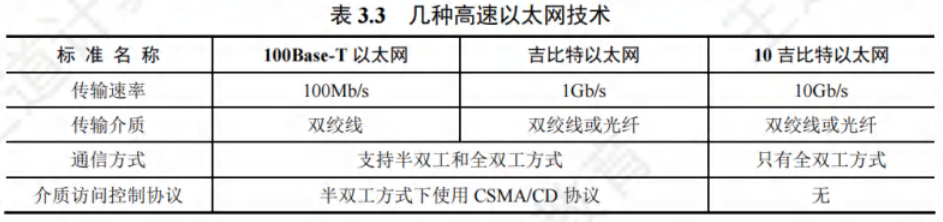
速率达到或超过100Mb/s 的以太网被定义为高速以太网，以下为您详细介绍几种常见的高速以太网技术：
100BASE-T（快速以太网）
- 基本特性：
- 100BASE-T 是基于双绞线传输 100Mb/s 基带信号的星形拓扑结构以太网。
- 采用 CSMA/CD 协议，支持全双工与半双工两种工作方式。
- 在全双工模式下，由于数据的发送和接收分别使用不同的信道，不会发生冲突，所以无需使用 CSMA/CD 协议。
- 帧格式与参数变化：
- 其 MAC 帧格式遵循 802.3 标准规定的格式。
- 为适应更高的速率，在保持最短帧长不变的情况下，将一个网段的最大长度减小至 100m，这样可以有效减少信号传输延迟，降低冲突发生的可能性。
- 帧间最小间隔从原本的 9.6μs 缩短为 0.96μs，这使得网络能够在更短的时间内处理更多的帧，提高了整体的数据传输效率。
吉比特以太网（千兆以太网）
- 工作模式与兼容性：
- 吉比特以太网允许在 1Gb/s 的速率下，以全双工和半双工两种方式运行。
- 使用 802.3 协议规定的帧格式，传输介质可选用双绞线或光纤。
- 在半双工方式下，由于存在多个设备竞争信道的情况，所以需要使用 CSMA/CD 协议来避免冲突；在全双工方式下，如同 100BASE-T 的全双工模式，不存在冲突问题，也就无需使用该协议。
- 吉比特以太网与 10BASE-T 和 100BASE-T 技术具有向后兼容性，这意味着现有的基于低速以太网的设备和网络架构可以较为平滑地升级到吉比特以太网。
- 应用场景：因其高速率和较好的兼容性，吉比特以太网广泛应用于对网络带宽需求较高的场景，如企业数据中心、大型园区网络等，能够满足大量数据的快速传输和处理需求。
10 吉比特以太网
- 帧格式与工作方式：
- 10 吉比特以太网的帧格式与 10Mb/s、100Mb/s 和 1Gb/s 以太网的帧格式完全一致，并且保留了 802.3 标准规定的以太网最小帧长和最大帧长。
- 这样的设计使得 10 吉比特以太网在进行网络升级时，能够与现有的以太网设备和网络协议良好兼容。
- 它仅工作在全双工方式下，由于不存在多个设备争用信道的问题，所以自然也不使用 CSMA/CD 协议。
- 优势与意义：10 吉比特以太网的出现，进一步提升了以太网的传输速率，满足了诸如高性能计算、数据中心互联等对超高速网络连接的需求。同时，它继承了以太网一贯的优点，如可扩展性、灵活性以及易于安装和维护等，使得以太网在高速网络领域依然保持着强大的竞争力。
以太网从 10Mb/s 逐步演进到 10Gb/s，充分展现了其可扩展性（速率从 10Mb/s 提升至 10Gb/s）、灵活性（支持多种传输介质、全双工和半双工模式、共享式和交换式网络架构），并且具有易于安装和良好的稳健性等特点，使其在局域网领域始终占据重要地位。
IEEE802.11无线局域网
无线局域网的组成
有固定基础设施无线局域网
- 协议与拓扑：IEEE为有固定基础设施的无线局域网制定了802.11系列协议标准，像802.11a/b/g/n等。该类网络采用星形拓扑，以接入点（Access Point, AP）为中心，在MAC层运用CSMA/CA协议，人们常将使用802.11系列协议的局域网称作Wi-Fi。
- 基本服务集（BSS）：
- 构成与通信：802.11标准把基本服务集定义为无线局域网的最小组成部分。一个BSS包含一个AP和若干移动站。无论是BSS内各站之间，还是与外部站点通信，都要通过本BSS的AP。AP即基本服务集中的基站。
- 配置与覆盖：安装AP时，需分配不超32字节的服务集标识符（SSID）和一个信道，SSID是无线局域网名称。基本服务集覆盖区域叫基本服务区（BSA），其直径一般不超100m。
- 扩展的服务集（ESS）：
- 构建与功能：BSS可孤立存在，也能通过AP连到分配系统（DS），再与其他BSS相连形成ESS。DS让ESS对上层而言类似一个BSS。
- 接入有线网络：ESS借助Portal设备为无线用户提供有线以太网接入，Portal类似网桥。如移动站A与另一BSS的移动站B通信，要经AP1和AP2，AP1到AP2用有线传输。
- 漫游特性：当移动站A漫游到其他BSS（如A’）时，虽使用的AP改变，但仍能与移动站B保持通信。
无固定基础设施移动自组织网络
- 网络特性：这是一种无固定基础设施的无线局域网，也叫自组网络（ad hoc network）。它没有BSS中的AP，而是由平等状态的移动站相互通信构成临时网络。
- 结点功能：网络内各结点地位平等，中间结点兼具转发功能，起到类似路由器的作用。 这种网络无需预先搭建基础设施，可快速组建，适用于临时通信场景，如应急救援、野外作业等。
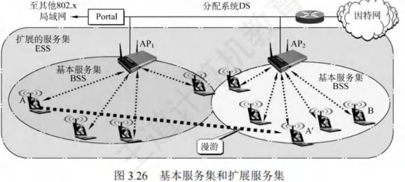
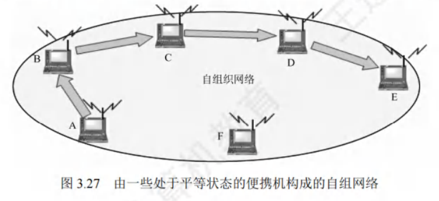
802.11局域网的MAC帧
802.11局域网的MAC帧主要分为数据帧、控制帧和管理帧这三种类型。
802.11 数据帧
- MAC首部：这部分长度为30字节，承载了较多关键信息，802.11数据帧的复杂性也主要体现在MAC首部。它包含了诸如源地址、目的地址、帧控制等重要字段，这些字段对于数据帧在无线局域网中的传输、路由以及接收处理等环节起着决定性作用。例如，源地址和目的地址用于标识数据的发送方和接收方，帧控制字段则可以指示帧的类型、传输方向、是否采用加密等信息。
- 帧主体：也就是帧的数据部分，它的长度不超过2312字节，相较于以太网数据帧的最大长度要长得多。这使得802.11数据帧能够携带更多上层协议数据单元，例如可能包含较大的多媒体文件片段、大量的网络配置信息等，以满足无线局域网中多样化的数据传输需求。
- 帧检验序列FCS（MAC尾部）：长度为4字节，其作用与以太网帧中的检验码类似，通过特定的算法（如CRC校验算法）对整个数据帧（除前导码等部分外）进行校验计算，生成校验值并填充在该字段。接收方在接收到数据帧后，会按照相同的算法重新计算校验值，并与接收到的FCS字段值进行比对，以此来判断数据帧在传输过程中是否发生错误，确保数据的完整性和准确性。
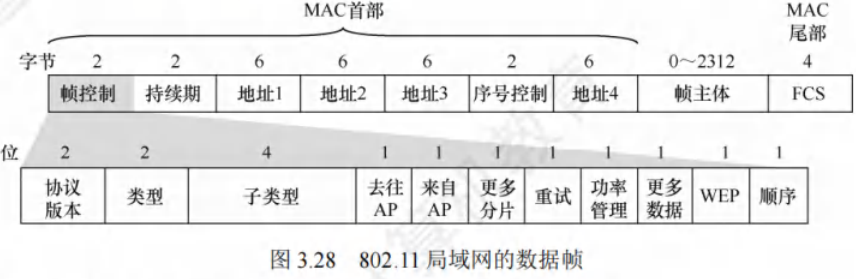
802.11 帧 MAC 首部地址字段
802.11 帧的 MAC 首部中，4 个地址字段（均为 MAC 地址）里，此处重点讨论前三个地址（地址 4 用于自组网络）。这三个地址内容取决于帧控制字段中的“去往 AP”和“来自 AP”两个字段数值。以下是 802.11 帧地址字段最常用的两种情况：
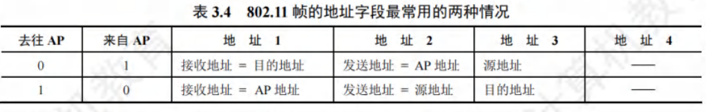
重点：地址 1 是直接接收数据帧的结点地址，地址 2 是实际发送数据帧的结点地址。
-
BSS 内 A 站向 B 站发送数据帧：
- A 站发往 AP 时：帧控制字段中，“去往 AP = 1”且“来自 AP = 0”；地址 1 是 AP 的 MAC 地址，地址 2 是 A 站的 MAC 地址，地址 3 是 B 站的 MAC 地址。注意，“接收地址”与“目的地址”并不等同。
- AP 转发给 B 站时：帧控制字段中，“去往 AP = 0”且“来自 AP = 1”；地址 1 是 B 站的 MAC 地址，地址 2 是 AP 的 MAC 地址，地址 3 是 A 站的 MAC 地址。注意，“发送地址”与“源地址”也不等同。
- 理解方法：地址 1 和地址 2 分别是无线通信中信道两端的接收地址和发送地址。主机发往 AP 时，接收地址不是实际目的地址，所以用地址 3 存放实际目的地址；AP 发往主机时，发送地址不是实际源地址，所以用地址 3 存放实际源地址。
-
更复杂情况-路由器向 A 站发送数据（两 AP 有线连接到路由器）：
- 路由器操作：路由器从 IP 数据报获知 A 站 IP 地址，并用 ARP 获取 A 站的 MAC 地址。之后，路由器接口 R1 将该 IP 数据报封装成 802.3 帧（802.3 帧只有两个地址），该帧源地址字段是 R1 的 MAC 地址，目的地址字段是 A 站的 MAC 地址。
- AP 操作：AP 收到该 802.3 帧后，转换为 802.11 帧，在帧控制字段中，“去往 AP = 0”且“来自 AP = 1”；地址 1 是 A 站的 MAC 地址，地址 2 是 AP 的 MAC 地址，地址 3 是 R1 的 MAC 地址。这样，A 站可从地址 3 确定将数据报发送到子网中路由器接口的 MAC 地址。
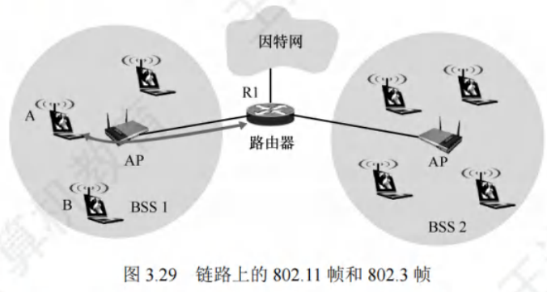
-
A 站向路由器接口 R1 发送数据：
- A 站操作：A 站生成一个 802.11 帧，在帧控制字段中，“去往 AP = 1”且“来自 AP = 0”；地址 1 是 AP 的 MAC 地址，地址 2 是 A 站的 MAC 地址，地址 3 是 R1 的 MAC 地址。
- AP 操作：AP 收到该 802.11 帧后，将其转换为 802.3 帧。该帧源地址字段是 A 站的 MAC 地址，目的地址字段是 R1 的 MAC 地址。
总结：地址 3 在 BSS 和有线局域网互连中起关键作用，它允许 AP 在构建以太网帧时确定目的 MAC 地址。
VLAN 基本概念与基本原理
以太网存在的问题
- 一个以太网是一个广播域，计算机数量过多时，会出现大量广播帧，如 ARP 和 DHCP 协议。而且不同部门共享局域网，对信息保密和安全不利。
VLAN 定义
- 通过虚拟局域网（Virtual LAN，VLAN），可将较大局域网分割成较小的、与地理位置无关的逻辑 VLAN，每个 VLAN 是一个较小的广播域。
划分 VLAN 的方式
- 基于接口：将交换机的若干接口划为一个逻辑组，此方法简单有效。若主机离开原来接口，可能进入新子网。
- 基于 MAC 地址：按 MAC 地址将主机划分为一个逻辑子网，主机物理位置在不同交换机间移动时，仍属于原来子网。
- 基于 IP 地址：根据网络层地址或协议划分 VLAN，这样的 VLAN 可跨越路由器扩展，连接多个局域网的主机。
支持 VLAN 的以太网帧格式扩展
- 802.3ac 标准定义在以太网帧中插入一个 4 字节标识符（插在源地址字段和类型字段之间），称为 VLAN 标签，指明发送帧的计算机所属虚拟局域网。插入 VLAN 标签的帧称为 802.1Q 帧，如图 3.30 所示。因 VLAN 帧首部增加 4 字节，以太网最大帧长从 1518 字节变为 1522 字节。
VLAN 标签详解
-
VLAN 标签前两字节总置为 0x8100，表示这是 802.1Q 帧。
-
后2字节中，前 4 位作用不大暂不讨论，后 12 位是 VLAN 的标识符 VID，它唯一标识该 802.1Q 帧所属 VLAN。12 位的 VID 可识别 4096 个不同 VLAN。插入 VLAN 标签后，802.1Q 帧最后的 FCS 必须重新计算。
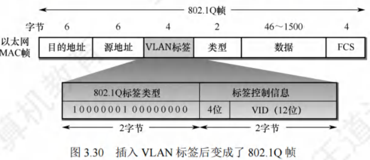
-
VLAN 在交换机中的应用：
- 如图 3.31 所示，交换机 1 连接 7 台计算机，局域网划分为 VLAN-10 和 VLAN-20，10 和 20 是 802.1Q 帧中 VID 字段的值，由交换机管理员设定。主机不知自身 VID 值（交换机必须知道），主机与交换机交互的是标准以太网帧。VLAN 范围可跨越不同交换机，前提是交换机能识别和处理 VLAN。交换机 2 连接 5 台计算机并与交换机 1 相连，其中 2 台计算机加入 VLAN-10，3 台加入 VLAN-20。这两个 VLAN 虽跨越两个交换机，但各自是一个广播域。连接两个交换机接口之间的链路称为汇聚链路或干线链路。
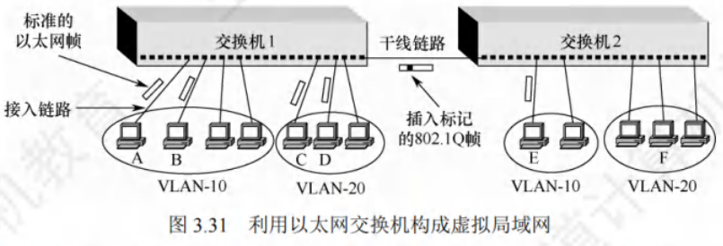
- 帧转发示例：
- 若 A 站向 B 站发送帧，交换机 1 根据帧首部目的 MAC 地址，识别 B 站属本交换机管理的 VLAN-10，像普通以太网一样直接转发帧。
- 若 A 站向 E 站发送帧，交换机 1 转发到交换机 2 前要插入 VLAN 标签，否则交换机 2 不知转发给哪个 VLAN。干线链路上传送的是 802.1Q 帧。交换机 2 向 E 站转发帧前拿走 VLAN 标签，E 站收到的是标准以太网帧。
- 若 A 站向 C 站发送帧，因 A、C 站处于不同 VLAN（VLAN-10 和 VLAN-20），属于不同网络间通信，需上层路由器解决，也可在交换机中嵌入专用芯片实现第 3 层转发功能。
- 如图 3.31 所示，交换机 1 连接 7 台计算机，局域网划分为 VLAN-10 和 VLAN-20，10 和 20 是 802.1Q 帧中 VID 字段的值，由交换机管理员设定。主机不知自身 VID 值（交换机必须知道），主机与交换机交互的是标准以太网帧。VLAN 范围可跨越不同交换机，前提是交换机能识别和处理 VLAN。交换机 2 连接 5 台计算机并与交换机 1 相连，其中 2 台计算机加入 VLAN-10，3 台加入 VLAN-20。这两个 VLAN 虽跨越两个交换机，但各自是一个广播域。连接两个交换机接口之间的链路称为汇聚链路或干线链路。